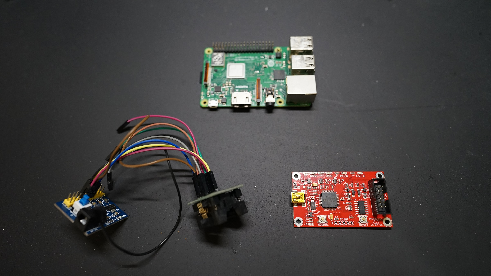
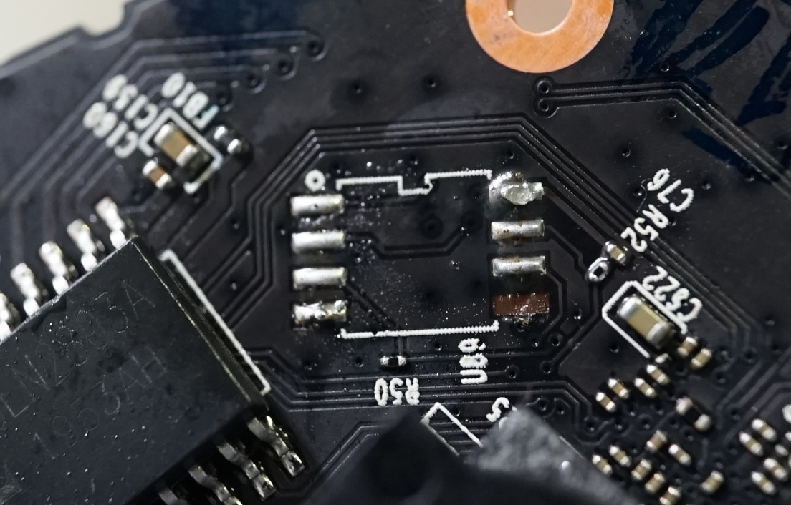
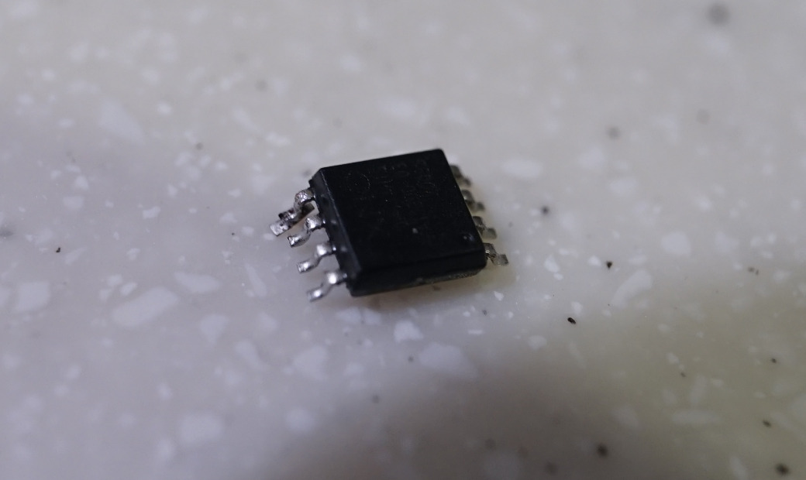
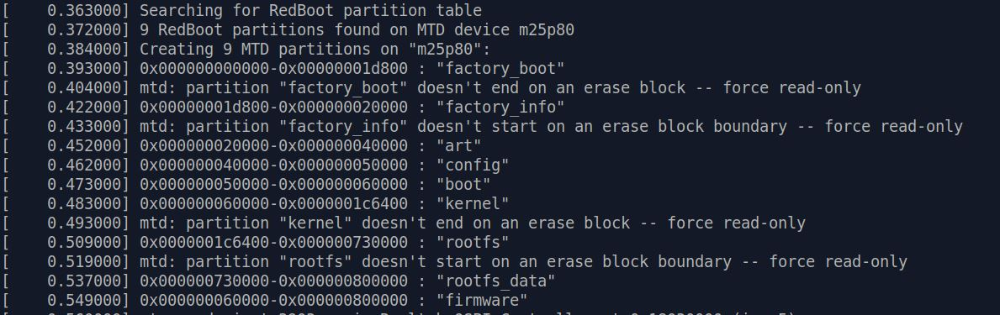
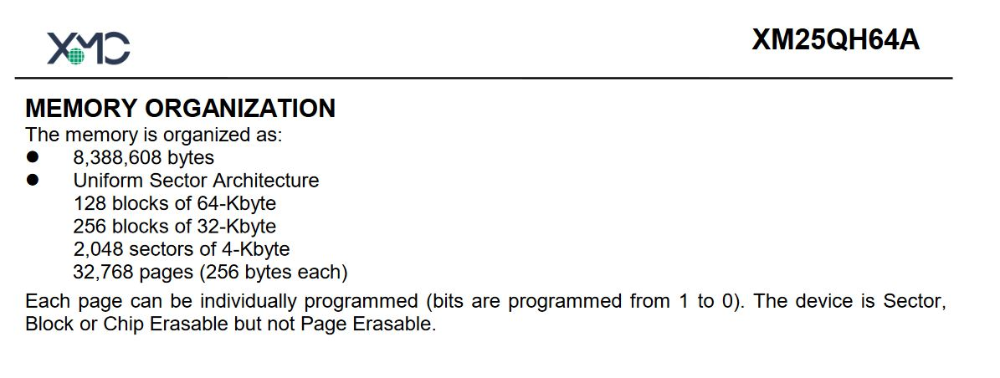
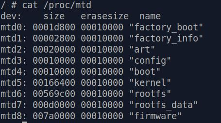
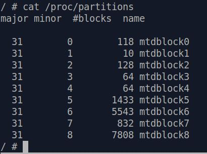
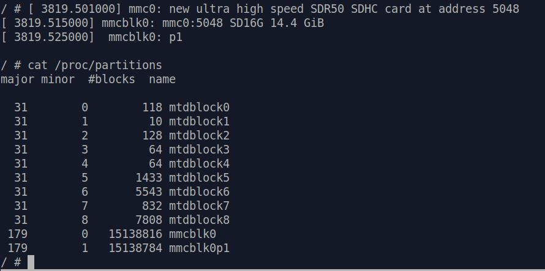
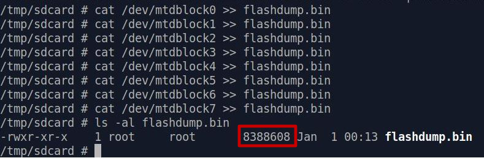

Dumping Flash Content
It may sound weird to some people that we are trying to perform a flash dump at this point. After all, we've already got the firmware file, right?
It's important to understand in terms of analyzing a device, that having access
to runtime environment is better than having a flash dump; having a flash dump is better than having a firmware file for upgrade; and having a firmware file is way better than
having nothing.
The logic behind this is that runtime environment is, well, how the device is really working. And flash dump is an image of the system's data storage with some private data (like the hard drive of your
computer). Firmware file is more like an installation image of your OS. The amount of information within them is different.
Of course, the above statement is just the reflection of a general mindset. It is not
an absolute truth, as each situation has its own pros and cons. [*]
The "Hard" Way
Dumping flash usually needs to be done the "hard" way, i.e. desoldering the flash chip and reading it with compatible hardware. Usually this can be done with reasonable soldering skills and simple hardware like a raspberry pi with
wide body SOP8 chip socket and flashrom.
However, the C200 makes use of a flash chip made by XMC - a not so well known flash chip manufacturer. A raspberry
pi alone will have hard a time reading the flash content and reliably (compared to dumping flash chips from Winbond or GigaDevice).
This is due to the fact that the flash chip used in the C200 can't work properly under the
raw currents and voltages a raspberry pi is providing. You will thus need to use some more specific hardware to communicate with the SPI flash chip.
For example, we have to use a buspirate and an external 3.3V power supply
to obtain a stable and consistent flash dump.

{kind=link}
Desoldering the flash chip and dumping it is the most straightforward and fastest way. However it presents some risks.
First of all, heating the flash chip too much and for a prolonged period of time can damage it.
Second,
as mentioned before in "Console" section, PCB pads are extremely fragile. If you are not careful enough during the (de)soldering process, you can rip the pads off and render your device useless after
dumping the flash [*].
Here's a victim of mine :


Practice soldering, don't do as i do 😝
!
{kind=link}
{kind=link}
The Safe Way
Tinkering with hardware isn't for every one. But thankfully, the C200 provides us with enough information to dump the whole flash content in a safer programmatic way.
First of all, we can take a look at this specific
portion of the boot log :

Let
me make it clearer [*]:
{kind=link}
| 0x0 - 0x1d800 |
factory_boot |
| 0x1d800 - 0x20000 |
factory_info |
| 0x20000 - 0x40000 |
art |
| 0x40000 - 0x50000 |
config |
| 0x50000 - 0x60000 |
boot |
| 0x60000 - 0x1c6400 |
kernel |
| 0x1c6400 - 0x730000 |
rootfs |
| 0x730000 - 0x800000 |
rootfs_data |
Why is this important?
We can see that the hex value is incrementing, and it ends at 0x800000. Let's remember this for a while.
Next we can check the datasheet of the XM25QH64A flash chip used in the C200.
In
the "Memory Organization" section, the datasheet contains the following information:

We
can see from here that this flash chip has 8,388,608 bytes of memory capacity, and guess what? 0x800000 is exactly 8,388,608 in decimal value!
So by now we know that this information in
boot log is actually telling you the physical mapping of flash memory address to its partition name.
{kind=link}
MTD and MTDblock devices
Having the partition names in mind, we can check /proc/mtd with command cat /proc/mtd.

Looks familiar?
The information
in /proc/mtd is in particular telling you what mtd virtual device each partition of the flash chip is attached to. For example, "factory_boot" is attached to mtd0.
We can also take a look at /proc/partitions :

This shows the mapping of flash
partitions to mtdblock virtual devices. [*]
Now, if we can get access to these virtual devices, then we may have a chance to directly read
the contents of the flash chip!
{kind=link}
{kind=link}
Usually in a fully initialized Linux system, we will see these virtual devices under /dev . However, there's currently nothing under /dev directory
as we bypassed the initialization process of the C200 to get a shell. Therefore we'll have to manually create them one by one.
First of all we'll have to make /dev writable
[*] . Issue command mount -t tmpfs tmpfs /dev -o mode=0755,size=512K to mount a tmpfs on
/dev . After that, mounting a mtdblock device is as simple as issuing command:
mknod /dev/mtdblockX b [major] [minor]
For
example, to access "factory_boot" (mtdblock0), simply issue command mknod /dev/mtdblock0 b 31 0 . This will make a virtual device node of
mtdblock0 under /dev . You can then access this partition of flash chip with various tools and programs in the OS.
{kind=link}
Dumping Flash Content Into a File
Our ultimate goal here is to obtain an image of the physical flash chip content.
Now we've managed to create virtual device nodes for each partitions, the only thing left is to write all the contents of each node into
a file and extract it.
However, up to now, there is no network access, and transferring 8MB of data over serial console will take forever.
Fortunately, C200 cameras have an SD card slot for storing recorded videos.
We can use this feature to our advantage and dump the flash to an SD card!
Insert a fat32 formatted SD card into the slot and after a
while, the console should tell you it has detected an SD card. And if you check /proc/partitions again, you will find two new entries : mmcblk0 and mmcblk0p1. These are the virtual device for your SD card.

To
read / write to your SD card, you'll have to :
1. Create a node for mmcblk0p1.
2. Mount the node to a directory in the system.
First step is simple, we've already done it before.
mknod /dev/mmcblk0p1 b 179 1 will do the trick and create a node for us.
To achieve step 2, we can just simply mount it under /dev (which
is currently writable). But for the sake of cultivating good habits, let's mount it under /tmp .
Issue following command in order :
mount tmpfs /tmp -t tmpfs -o size=20633600,nosuid,nodev,mode=1777 [*]mkdir /tmp/sdcard
mount -t vfat /dev/mmcblk0p1 /tmp/sdcard/
And now you will be able to read / write to your SD card under /tmp/sdcard .
The
final step is to actually write the flash contents into a file and store it in your SD card. We can achieve this with a simple command we used again and again - cat .
Simply
cat /dev/mtdblock0 >> /tmp/sdcard/flashdump.bin and the content of /dev/mtdblock0 will be appended into /tmp/sdcard/flashdump.bin.
Loop
this command through /dev/mtdblock0 to /dev/mtdblock7 and you will get a dump of the entire flash chip!

Finally,
use umount /tmp/sdcard to safely unmount your SD card, whose content can now be transferred to a PC.
{kind=link}
{kind=link}